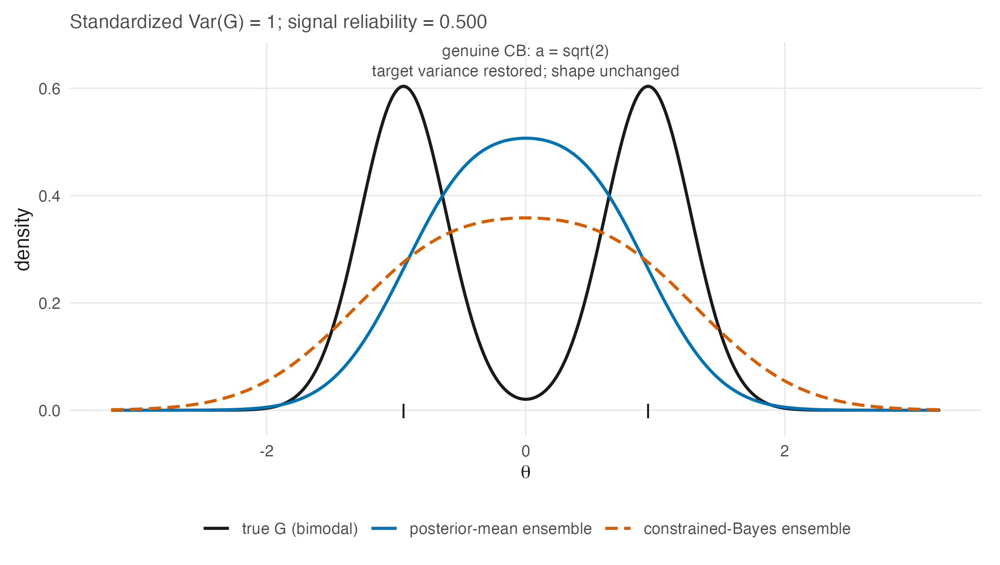

18 Constrained Bayes
Chapter 17 established that the three goals have different Bayes actions. This chapter takes the first repair — the one that fixes the ensemble’s spread — and states both what it achieves and, more usefully, the exact boundary of what it cannot.
The boundary turns out to be sharp and to follow from one structural fact: constrained Bayes is a positive affine map of the posterior means. Everything the chapter concludes about its limits is a consequence of that sentence.
18.1 The problem, restated as a constraint
Proposition 11.1 gave the defect: the posterior-mean ensemble has variance \(\sigma^2_\theta - \operatorname{E}[\operatorname{Var}(\theta_p \mid \mathbf{u}_p)]\), below the truth. Louis (1984) proposed fixing it by matching moments — requiring the ensemble of estimates to have the mean and variance the parameter ensemble is posteriorly expected to have — and Ghosh (1992) generalized the construction and gave it its name.
Ghosh’s summary of the motivation is worth quoting because it names the decision rather than the statistic: often “the main objective is to produce an ensemble of parameter estimates whose histogram is in some sense close to the histogram of population parameters,” as in “subgroup analysis, where the problem is not only to estimate the different components of a parameter vector, but also to identify the parameters that are above, and the others that are below” a threshold. That is Section 17.4’s goal, and it is the cut-score problem Chapter 1 opened with.
18.2 The estimator
Write \(\eta_p = \operatorname{E}[\theta_p \mid \mathbf{u}]\) and \(v_p = \operatorname{Var}[\theta_p \mid \mathbf{u}]\), with \(\bar\eta\), \(\bar v\) their averages over the \(P\) persons and \(V_\eta = P^{-1}\sum_p (\eta_p - \bar\eta)^2\). The source literature writes the posterior variance with a person-indexed lambda; TD-3 requires \(v_p\) here because \(\lambda_i\) already denotes 2PL item discrimination throughout the book.
Theorem 18.1 The constrained Bayes estimator. Adapted from Ghosh (1992, Theorem 1); the independent-posterior specialization is derived here
Among actions whose ensemble mean and variance match the posterior expectations of the parameter ensemble’s mean and variance, the one minimizing posterior expected squared error is
\[ \theta^{\mathrm{CB}}_p = \bar\eta + a\,(\eta_p - \bar\eta), \qquad a = \sqrt{1 + \frac{H_1}{H_2}}, \tag{18.1}\]
where \(H_1 = \operatorname{tr}\{\operatorname{V}(\boldsymbol\theta - \bar\theta\mathbf{1} \mid \mathbf{u})\}\) and \(H_2 = \sum_p (\eta_p - \bar\eta)^2\). Under posterior independence this is
\[ a = \sqrt{1 + \left(1 - \tfrac1P\right)\frac{\bar v}{V_\eta}} . \tag{18.2}\]
The inflation factor is the chapter’s whole content, and Equation 18.2 says where it comes from. The denominator \(V_\eta\) is the spread the posterior means have; the numerator \(\bar v\) is the spread they are missing, because Proposition 11.1 says the posterior means give up exactly the average posterior variance. So \(a\) is the factor that puts back what shrinkage removed, and
\[ \widehat{\operatorname{Var}}[G_P] = V_\eta + \left(1-\tfrac1P\right)\bar v \tag{18.3}\]
is the posterior expected empirical-distribution variance of the realized abilities when variance is defined with divisor \(P\) — the target Equation 18.1 matches by construction.
Two details are worth stating precisely because denominator conventions and posterior dependence can otherwise obscure them.
When \(H_1>0\) and \(H_2>0\), \(a > 1\), so this is inflation and not shrinkage. Ghosh flags the misreading himself under those conditions: Equation 18.1 “has the deceptive appearance of expressing the components of \(\mathbf{e}^{\mathrm{CB}}\) as convex combinations of the Bayes estimates and their averages. This is not so, because \(a > 1\).” The CB estimate of a person above the mean is further above it than their posterior mean, and further from the data than the posterior mean is only in the direction the posterior mean over-corrected. If \(H_1=0\), then \(a=1\); if \(H_2=0<H_1\), the displayed rule is undefined rather than an inflation factor.
The finite-\(P\) factor is already present when denominator conventions are aligned. Equation 18.2 defines \(V_\eta\) with divisor \(P\). R’s var(theta_pm), however, is the sample variance with divisor \(P-1\):
\[ s_\eta^2 = \frac{1}{P-1}\sum_p(\eta_p-\bar\eta)^2 = \frac{P}{P-1}V_\eta. \]
It follows exactly that
\[ \sqrt{1+\frac{\bar v}{s_\eta^2}} =\sqrt{1+\left(1-\frac1P\right)\frac{\bar v}{V_\eta}}. \]
Thus a formula written as \(\sqrt{1+\bar v/\operatorname{var}(\boldsymbol\eta)}\) has not dropped the factor when var means the divisor-\((P-1)\) sample variance.
The companion package implements precisely this identity. In .triple_goal() it forms theta_pm <- colMeans(s), obtains the marginal posterior variances as lambda_k <- theta_psd^2, sets var_pm <- var(theta_pm), and then computes cb_factor <- sqrt(1 + mean(lambda_k) / var_pm) (Lee 2026, R/estimates.R, .triple_goal() lines 264–296, specifically lines 272, 281, 284, and 296). Because var_pm has divisor \(P-1\), this is algebraically identical to Equation 18.2 under posterior independence, at finite \(P\); it is not a large-\(P\) approximation.
The remaining limitation is cross-person posterior covariance. Writing \(v_p\) for the marginal posterior variances, Ghosh’s numerator expands as
\[ H_1 =\left(1-\frac1P\right)\sum_p v_p -\frac{2}{P}\sum_{p<q}\operatorname{Cov}(\theta_p,\theta_q\mid\mathbf u). \]
The package expression uses the first term and omits the second. That omission vanishes under posterior independence, but a joint IRT fit can induce dependence through shared item parameters and hyperparameters. Its magnitude and sign are not evaluated here, so “CB attains the target variance” remains conditional on the independent-posterior specialization (or on a zero aggregate off-diagonal covariance term).
CB can fail to exist. Ghosh’s Remark 2 notes that \(H_2\) may be zero with positive probability — all posterior means equal — in which case Equation 18.1 is undefined. In the Rasch setting this happens when every person attains the same total score, which is rare but not impossible on a short test with a homogeneous group.
18.3 What CB cannot do, and why
Equation 18.1 is an affine function of \(\eta_p\) with positive slope. That single fact settles several questions at once, and stating it as a proposition is better than discovering each consequence separately.
Proposition 18.1 CB changes location and scale and nothing else. Adapted from Shen and Louis (1998, § 3, p. 459) for ranks; the standardized-moment statement is derived here
Because \(\theta^{\mathrm{CB}}_p = \bar\eta + a(\eta_p - \bar\eta)\) with \(a > 0\):
- the ordering of the CB estimates is the ordering of the posterior means, exactly;
- every standardized moment of order \(\ge 3\) of the CB ensemble equals that of the posterior-mean ensemble — skewness, kurtosis, and every higher shape feature are inherited unchanged;
- consequently the shape of the recovered distribution is the shape of the posterior-mean ensemble, rescaled.
Proof. An affine map \(x \mapsto b + ax\) with \(a > 0\) is strictly increasing, giving (1). For (2), standardized moments \(\operatorname{E}[(X-\mu)^k]/\sigma^k\) are invariant under positive affine maps for every \(k\). (3) is (2) restated. ∎
Shen and Louis (1998, sec. 3, p. 459) state the rank case directly: “the ranks based on the CB estimates are always identical with the ranks based on the posterior means.” Proposition 18.1 says that is not a coincidence about ranks but an instance of a wider invariance.
The consequence that matters for this book is item 2. CB cannot repair a shape mismatch already present in the posterior-mean ensemble, because a positive affine map has no access to shape beyond location and scale. This does not say that CB can never reproduce a bimodal target: it can do so when the posterior-mean ensemble already has that shape up to an affine transformation, including a sufficiently informative limiting regime. Figure 11.3, whose right-hand panel exists for this chapter, shows one finite-design failure: under a sharply bimodal truth with excess kurtosis -1.58, CB restores the standard deviation to 1.00 and leaves the excess kurtosis at the posterior means’ -0.65. The valley stays filled in; only the axis is stretched.
The same failure can be drawn without simulating anyone. Figure 18.1 works entirely in closed form under the constant-error working model at the 0.5 reliability tier — the tier where, per Equation 11.6, the compression is severest — and shows the posterior-mean ensemble arriving unimodal, so that no positive affine map of it can reach the two-moded truth.

This is exactly why Chapter 19 exists. If the goal is the EDF and the truth is not determined by two moments, a moment-matching repair is structurally insufficient and a different construction is required.
CB still helps, and saying otherwise would overcorrect. In the same simulation the Kolmogorov–Smirnov distance to the true EDF falls from 0.17 for the posterior means to 0.12 for CB. Fixing the variance is a real improvement even when the shape is wrong, and the honest summary is that CB removes the part of the error that a scale correction can remove. Note also that in this particular configuration the raw ML ensemble happens to score 0.10 — better than CB — which is a reminder that a single KS number at one error variance is not a ranking of estimators. Chapter 19 compares them on the loss they are actually built for.
18.4 Where CB sits
CB belongs to a family of variance-inflation repairs, and its distinguishing feature is that the inflation factor is derived from the posterior rather than tuned.
The comparison with Chapter 12’s Louis observation makes this concrete. Louis’s approximate prescription — weight the data by roughly the square root of the posterior-mean weight — and Equation 18.2 are the same idea at different levels of exactness: under the constant-error normal working model of Proposition 11.1, the two coincide, because there \(V_\eta = \bar w^2(\sigma^2_\theta + \operatorname{se}^2)\) and \(\bar v = \bar w\operatorname{se}^2\), so \(a \to \bar w^{-1/2}\) and \(a\eta_p = \sqrt{\bar w}\,\hat\theta_p\) up to the centring. Chapter 12’s square root and Equation 18.1 are one estimator.
Beyond CB, the line of work that relaxes the Gaussian assumption on \(G\) runs through Paddock et al. (2006). Their § 2 places CB in the same lineage this chapter does — “Louis (1984) and Ghosh (1992) developed constrained Bayes estimates that provide unit-specific estimates with an empirical distribution” matching the target moments — and their contribution is to ask what happens when the population distribution is itself misspecified rather than merely under-dispersed.
Their answer bears directly on this book’s design. Among their data-generating distributions is a bimodal Gaussian mixture, and they find that a nonparametric population model “pays very little in efficiency when a parametric population distribution” would have sufficed, while a parametric one can be badly wrong for the EDF when it does not. But they also report a result that does not flatter every flexible procedure: under a bimodal truth with informative data, their DP-1 and smoothing-by-roughening fits attain lower squared-error loss for the \(\theta\)s yet larger ISEL for \(G\) than the Gaussian and \(T_5\) choices (2006, sec. 4.2.2.1). Their DP-2 fit lowers both losses in the same condition, so this is a procedure-specific trade-off rather than a generic property of Dirichlet-process or nonparametric models.
18.5 Sources and provenance
Theorem 18.1 is adapted from Ghosh (1992, Theorem 1), read directly, together with his definitions of \(H_1\) and \(H_2\) and the derivation of \(a = [1 + H_1/H_2]^{1/2}\) in his proof. Remark 1’s warning that \(a > 1\) under the theorem’s positive-dispersion conditions and Remark 2’s non-existence case are his and are quoted because both are routinely omitted from applied restatements. Ghosh credits Louis (1984) with formalizing the moment-matching idea, and this book follows that attribution.
The per-unit form Equation 18.2 and Equation 18.3 are algebra from Ghosh’s \(H_1\) and \(H_2\) under posterior independence; they are checked numerically in code/R/15-derivation-checks.R rather than asserted. The equality between that form and the package expression follows from the divisor-\((P-1)\) definition of R’s var(theta_pm), displayed explicitly in Section 18.2.
Proposition 18.1 is adapted and splits its provenance. The rank case is Shen and Louis (1998, sec. 3, p. 459), quoted. The generalization to all standardized moments of order \(\ge 3\) is elementary and derived here; it is stated as a proposition rather than left implicit because it is the reason Chapter 19 is a separate chapter rather than a refinement of this one.
The right-hand panel of Figure 11.3 and the KS numbers in Section 18.3 are computed in code/R/09-figures.R with fixed seeds, frozen in tables/F-ensemble-shrink-summary.rds with a CSV mirror, and read by this chapter. The ML comparison is reported because it does not flatter the argument.
Paddock et al. (2006) is now held and was read for §§ 1, 2, 4.2.2 and 6; its identifiers come from the source’s own embedded record and confirm those previously taken from Lin et al.’s (2006) reference list. Its § 2 supplies the Louis–Ghosh lineage quoted above and its § 4.2.2.1 the finding that flexibility can cost ISEL even where it gains SEL, which is included because it complicates rather than supports this book’s preference.
The package sequence and its denominator convention are read directly from .triple_goal() in R/estimates.R (lines 264–296): theta_pm at line 272, lambda_k at line 281, var_pm <- var(theta_pm) at line 284, and cb_factor at line 296 (Lee 2026). The matching receipt records both the finite-\(P\) equivalence and the unresolved covariance omission. Figure 18.1 is closed-form algebra under the working model, added in this edition (code/R/23-figures-v2-theory.R); nothing is simulated in it and nothing rests on it beyond what Proposition 18.1 already establishes.